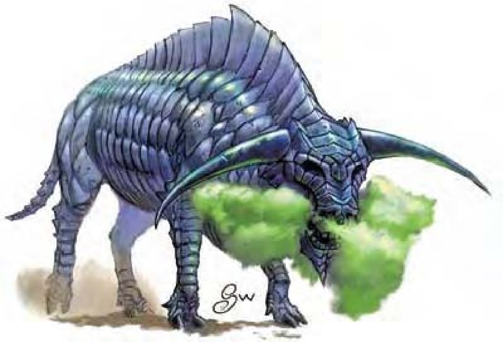

| 资料栏位 | 石化牛 (Gorgon) 大型魔法兽 |
| 生命骰 | 8d10+40（85HP） |
| 先攻 | +4 |
| 速度 | 30英尺（6格） |
| 防御等级 | 20（-1体型、+11天生）、接触9、措手不及20 |
| 基本攻击/擒抱 | +8 / +17 |
| 攻击 | 抵撞+12近战（1d8+7） |
| 全力攻击 | 抵撞+12近战（1d8+7） |
| 占据/触及 | 10英尺 / 5英尺 |
| 特殊攻击 | 喷吐攻击、践踏1d8+7 |
| 特殊能力 | 黑暗视觉60英尺、昏暗视觉、灵敏嗅觉 |
| 豁免 | 强韧+11、反射+6、意志+5 |
| 属性 | 力量21、敏捷10、体质21、智力2、感知12、魅力9 |
| 技能 | 聆听+9、侦察+8 |
| 专长 | 警觉、精通先攻、钢铁意志 |
| 环境 | 温带平原 |
| 组织 | 单独、成双、一批（3-4）或兽团（5-13） |
| 挑战级数 | 8 |
| 宝藏 | 无 |
| 阵营 | 总是绝对中立 |
| 进化 | 9-15HD（大型）；16-24HD（超大型） |
| 等级修正值 | ― |
暗色的金属鳞片披覆在公牛般的身体上，他还有一对银色的角。
石化牛会执着地守卫领域。他们多栖息于由岩石构成，像是地底迷宫一类的地区。
标准的石化牛肩高约6英尺，从鼻到尾部长8英尺，体重约4000磅。
石化牛本性凶猛具攻击性，一见到入侵者会立刻以践踏、抵撞攻击或是石化他们。没有任何方式能使这种凶猛的生物冷静下来，要驯养他们更是不可能。
战斗只要状况允许，石化牛将以冲撞对手作为遭遇的第一个动作。
喷吐攻击（超自然）：60英尺锥状范围，每1d4轮1次（每天上限5次）。效果为永久性石化，强韧检定DC=19，通过则无效。豁免检定DC的调整值与体质调整值相同。
践踏（特异）：通过反射检定（DC=19）则伤害减半。豁免检定DC的调整值与力量调整值相同。